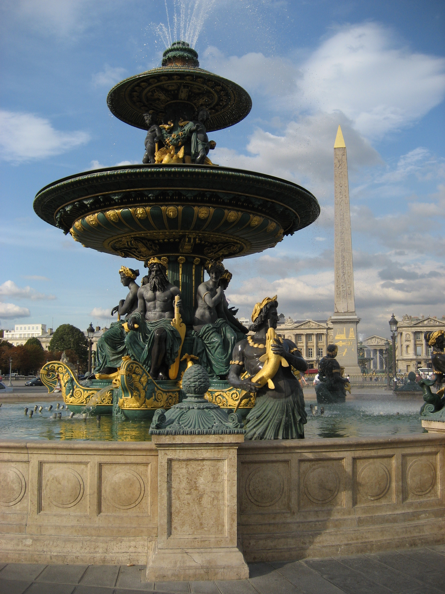
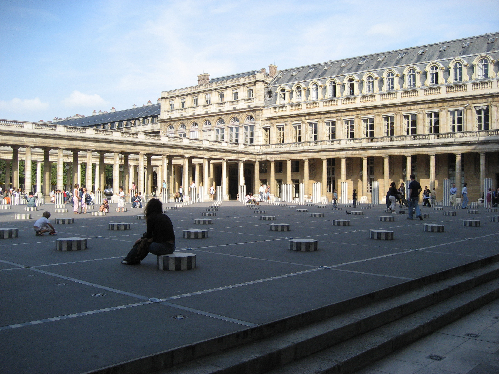
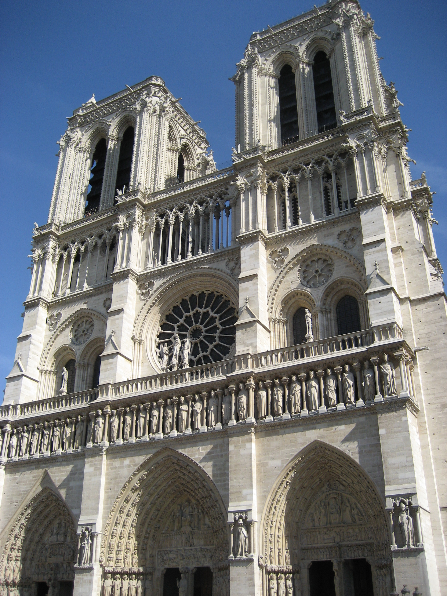

All images used by permission of Warner Nielsen
I love Paris and all it has to offer. From food to architecture, art to fashion; Paris has it all.
Here is one of my favorite quotes about Paris:
If you are lucky enough to have lived in Paris as a young man, then wherever you go for the rest of your life it stays with you, for Paris is a moveable feast. Ernest Hemingway
Some of my favorite sites to see in Paris include:
A couple of more places I like to visit and why:
| Place | Favorite Thing |
|---|---|
| Centre Pompidou | Modern Art, cool building |
| Champs Elysees | Tons of shops, long-wide boulevard |
| Champ de Mars | Play frisbee in front of the Eiffel Tower |
What is your favorite part about Paris? Here is your chance to tells us about it.
I really liked this website about Paris. I like the organization and flow. Their use of pictures is great and they center them well. There's not too much text but just enough. Part of it feels a bit cluttered, especially the left hand side of the page. I also don't really like the huge picture at the top of the page. It could be smaller.